El juego sigue a James Sunderland, quien recibe una carta de su esposa Mary, fallecida hace tres años,
diciéndole que lo espera en su “lugar especial” en Silent Hill.
Desconcertado y angustiado, James viaja a la ciudad en busca de Mary, aunque la premisa ya sugiere que algo sobrenatural
y perturbador está ocurriendo.
Al llegar, Silent Hill se revela como un lugar lleno de niebla, soledad y criaturas grotescas que parecen reflejar los miedos,
culpas y traumas internos de quienes entran en la ciudad. James se encuentra con varios personajes, como Maria, una mujer que se parece sorprendentemente a Mary,
y Eddie Dombrowski y Angela Orosco, quienes también están atrapados en la ciudad lidiando con sus propios tormentos psicológicos.
A medida que avanza, James descubre que Silent Hill no es solo un lugar físico, sino un espejo de su subconsciente,
que manifiesta sus sentimientos más oscuros. Las criaturas y los escenarios grotescos reflejan la culpa, el dolor y los secretos reprimidos de los personajes.
El juego concluye con varios finales posibles, determinados por las acciones y decisiones del jugador, revelando la verdad sobre la muerte de Mary y la relación de James con ella.
| Imagen | Monstruo | Descripción breve |
| 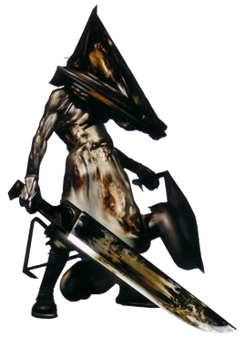 | Pyramid Head | Manifestación del castigo, culpa y represión de James. |
| 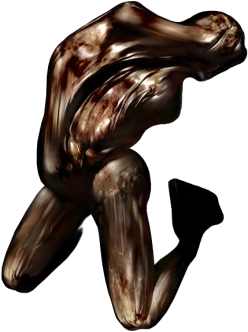 | Lying Figure | Humanoides encerrados en un traje de piel; escupen ácido. |
| 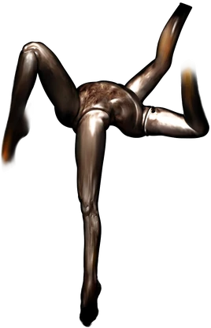 | Mannequin | Compuesto solo de piernas femeninas; simboliza deseo reprimido. |
| 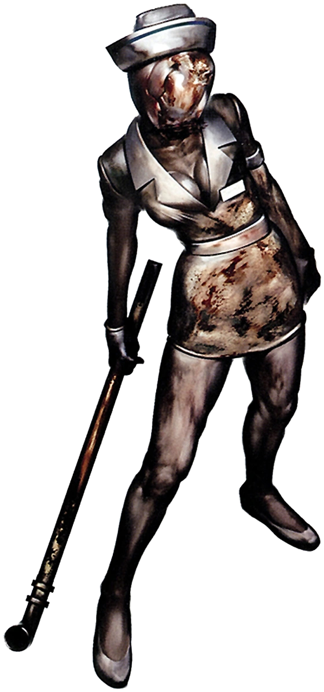 | Nurse | Enfermeras distorsionadas por la mente perturbada de James. |
| 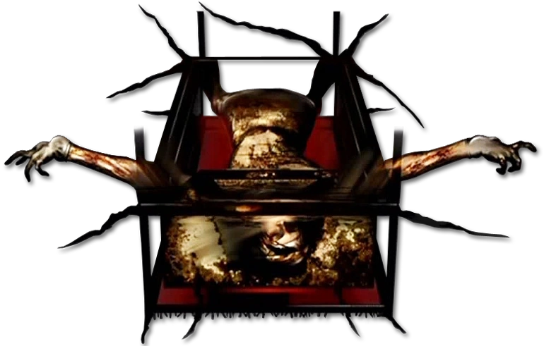 | Mary/Maria Boss | Última manifestación del conflicto emocional de James. |
| 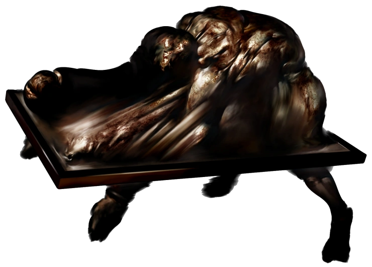 | Abstract Daddy | Representa el abuso sufrido por Angela; enemigo extremadamente simbólico. |
| 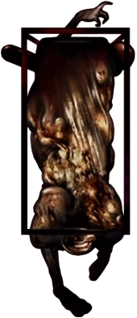 | Flesh Lip | Cuerpos colgantes que representan abuso emocional y verbal. |
 | Mandarin | Criaturas bajo las rejillas, invisibles salvo por sus brazos largos. |


 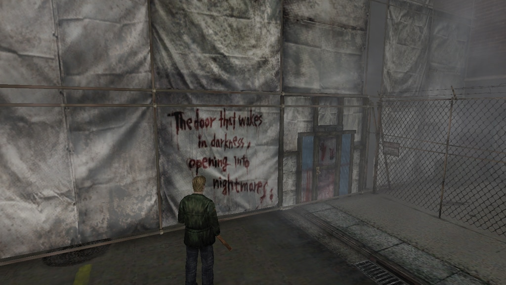
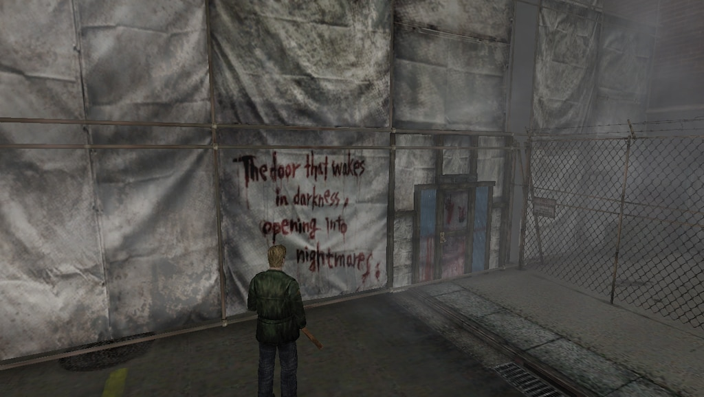
 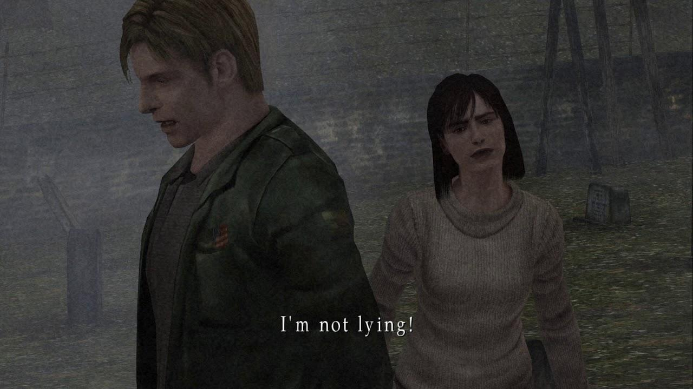
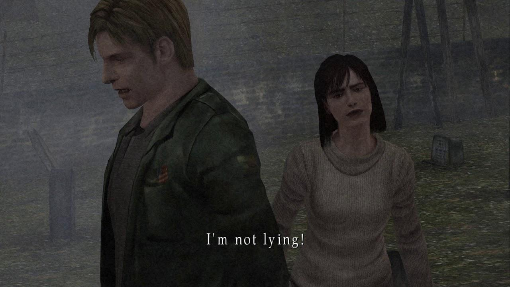
 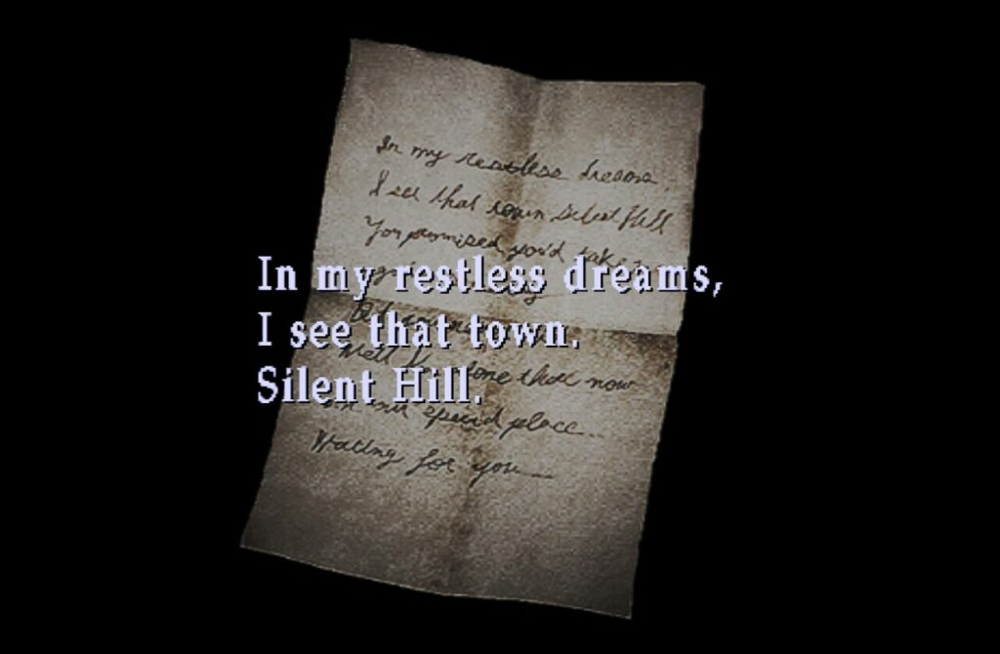
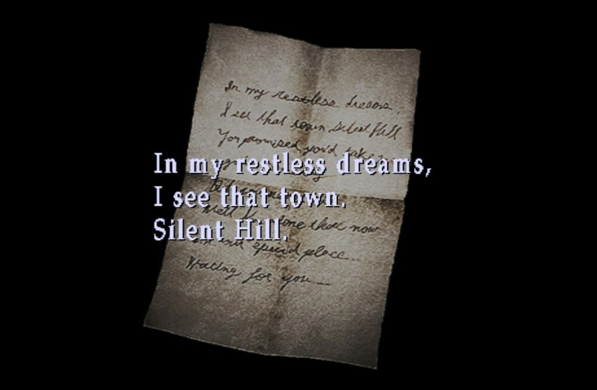
 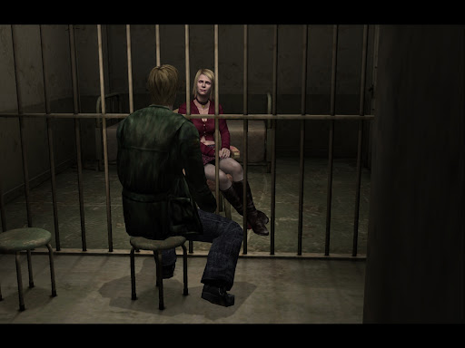
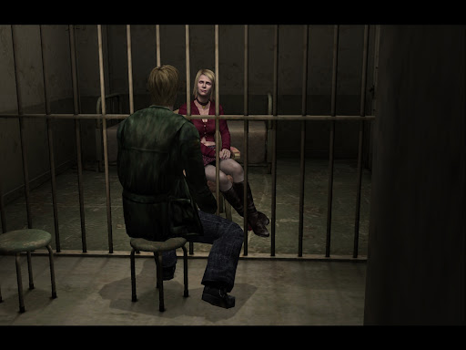
 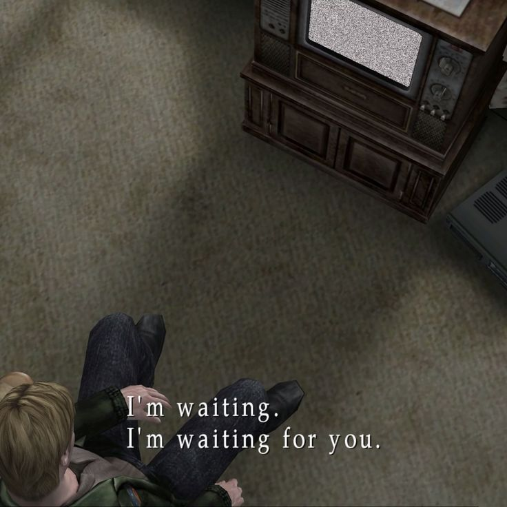
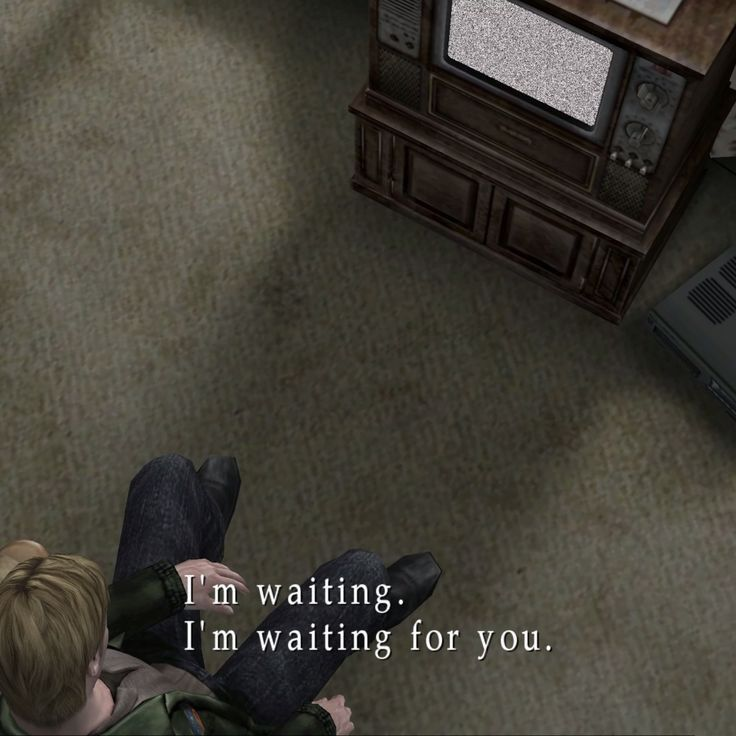